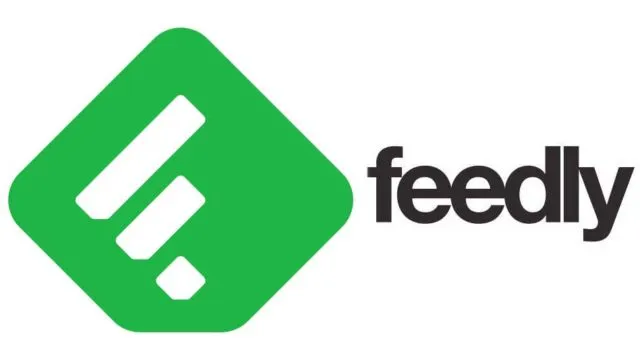

Montre Connecté
Découverte des nouvelles technologies sur la montre pour avoir le plus de données à caractère personnel.
Garmin Fenix 7 - Site officiel
Des nouvelles cyberattaque plus dissimuler
Comme par exemple le clickjacking.C'est une cyberattaque ou l'attaquant cache ou supepose du code malveillant
dans le code du site consulté.
L'utilisation de l'IA pour tromper les humains
La fréquence des veilles et comment je fais de la veille
Pour pouvoir faire de la veille technologique.J'utilise Feedly.C'est
là ou je trouve les articles ou des cyberattaques ou les nouvelles technologies.
Toutes les semaines je rajoute des articles et je lis ceux-ci pour me mettre à jour
sur les nouveautés qui arrivent.
